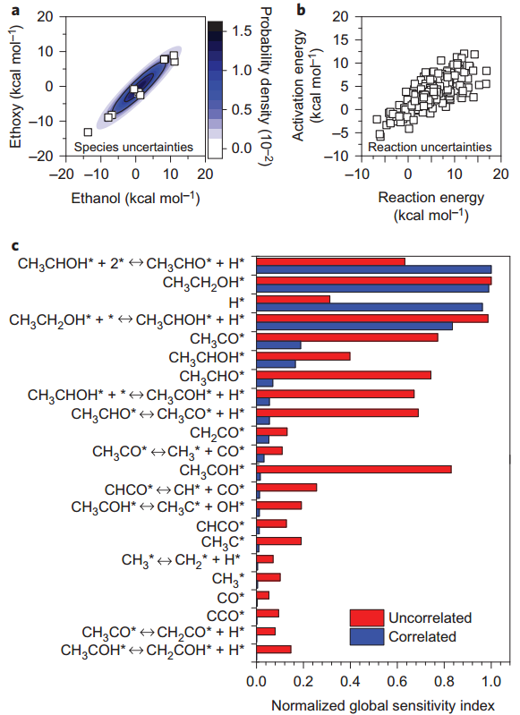

May.12 2016
Abstract Kinetic models based on first principles are becoming common place in heterogeneous catalysis because of their ability to interpret experimental data, identify the rate-controlling step, guide experiments and predict novel materials. To overcome the tremendous computational cost of estimating parameters of complex networks on metal catalysts, approximate quantum mechanical calculations are employed that render models potentially inaccurate. Here, by introducing correlative global sensitivity analysis and uncertainty quantification, we show that neglecting correlations in the energies of species and reactions can lead to an incorrect identification of influential parameters and key reaction intermediates and reactions. We rationalize why models often underpredict reaction rates and show that, despite the uncertainty being large, the method can, in conjunction with experimental data, identify influential missing reaction pathways and provide insights into the catalyst active site and the kinetic reliability of a model. The method is demonstrated in ethanol steam reforming for hydrogen production for fuel cells.
Figure a, Bayesian-estimated posterior predictive probability distribution function (contours) demonstrates strong correlated uncertainties in the ethanol and ethoxy enthalpies of formation. Contours correspond to the probability density (maximum probability density is about 1.5 × 10−2). The distribution describes the DFT data points (squares) very well. The multivariate probability distribution includes all the other species energies not shown here. b, Correlations in uncertainties in the DFT-computed activation energy of C–H bond scission (dehydrogenation reactions) versus the corresponding reaction-energy uncertainties (squares). Similar correlations exist among other species energies and reactions. c, Effect of correlations on the identity of influential species enthalpy and reaction activation-energy perturbations (that is, those with a normalized global sensitivity index of at least 0.05) on the ethanol conversion. Red bars are for global sensitivity analyses in which the parameter perturbations were assumed to be uncorrelated and blue bars are for highly correlated perturbations (using the Bayesian method), as discussed in the text. Normalized global sensitivity indices are calculated by dividing the raw global sensitivity indices (Supplementary Information) by the maximum value for each sampling distribution. Reaction conditions are 300 °C, 1 atm, area to reactor volume (S/V) = 7.5 × 10−2 cm−1, 12.5% ethanol, 37.5% water, balance He, and residence time is 1.77 s. DFT uncertainties exhibit strong correlations that must be accounted for during the global SA calculations. Correlations between parameter uncertainties strongly reduce the number of sensitive parameters and alter which parameters are influential. ‘*’ refers to an empty active site.
>> Detail